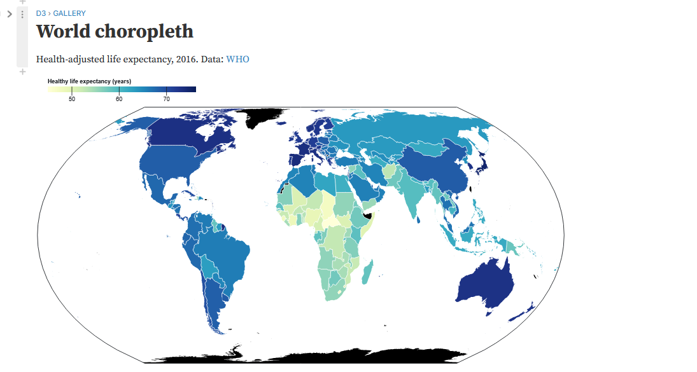
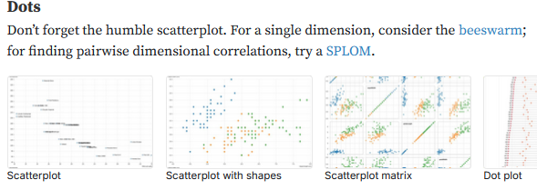
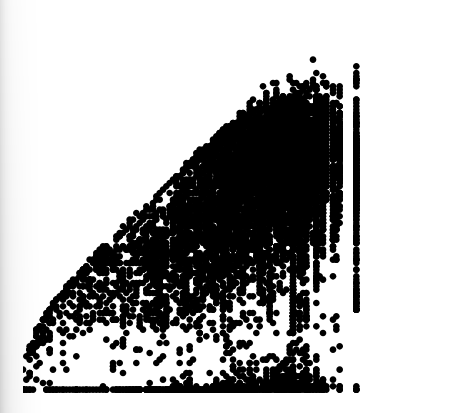
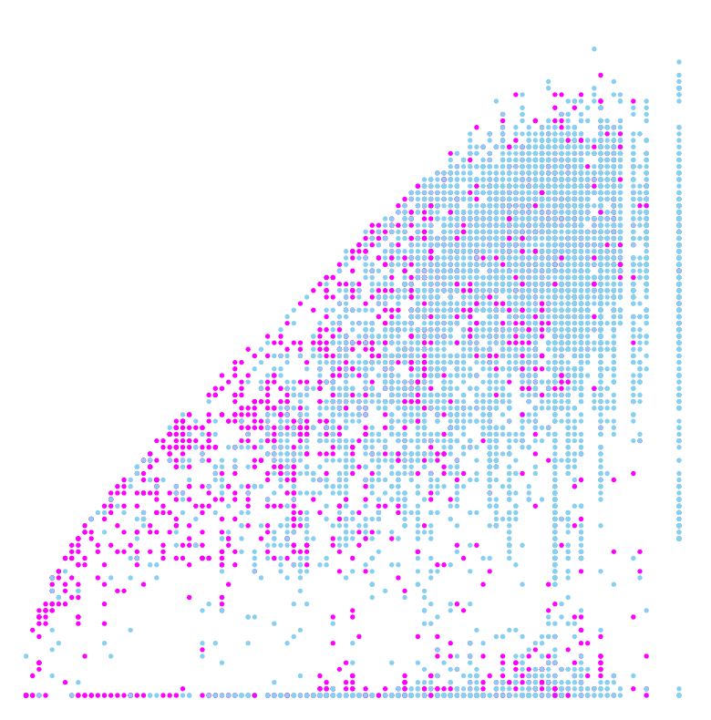
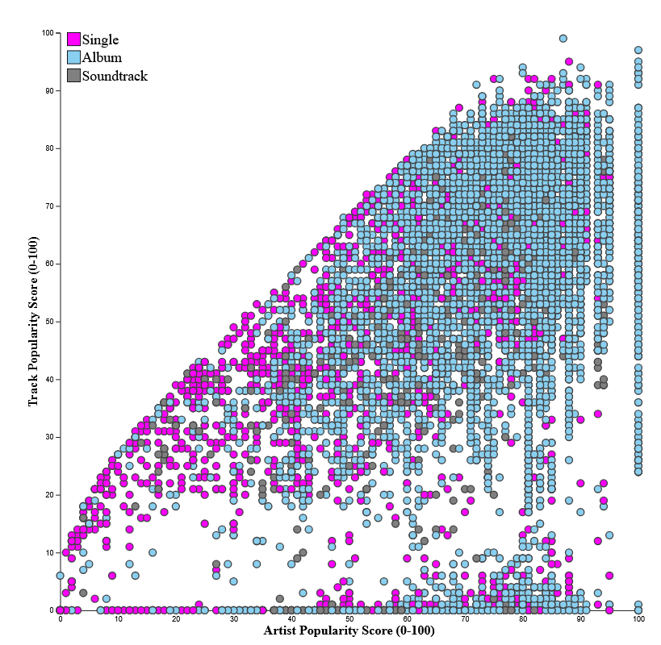
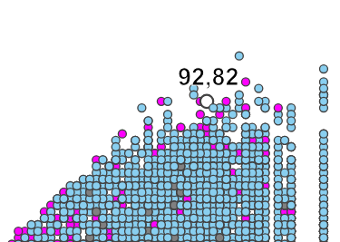
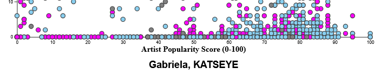
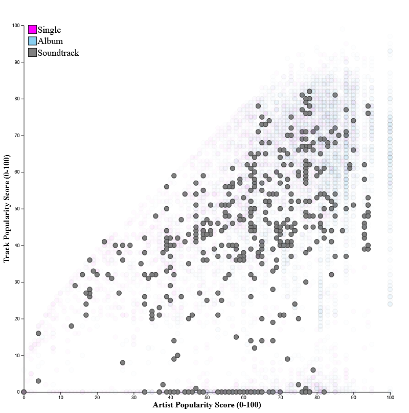
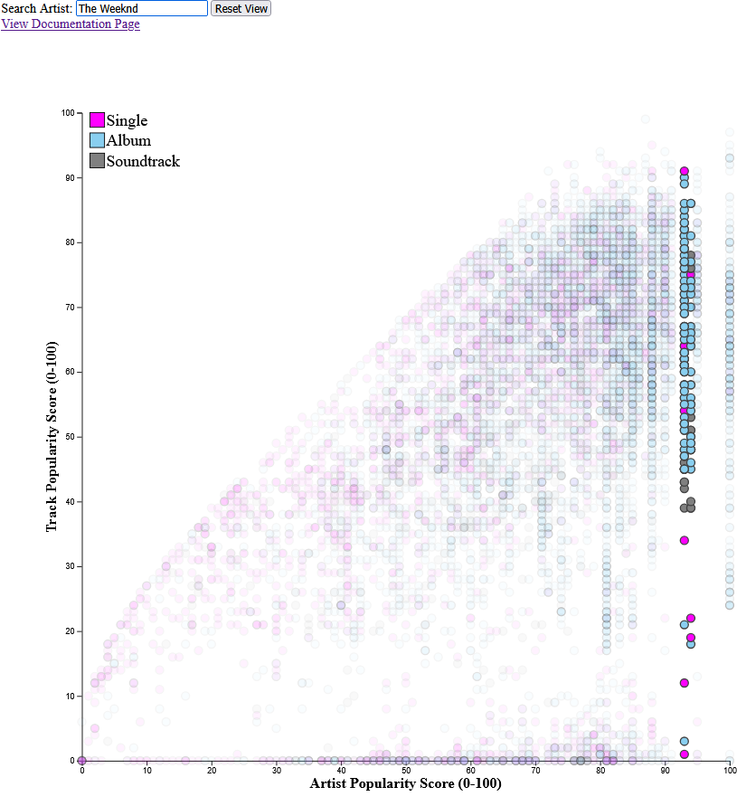
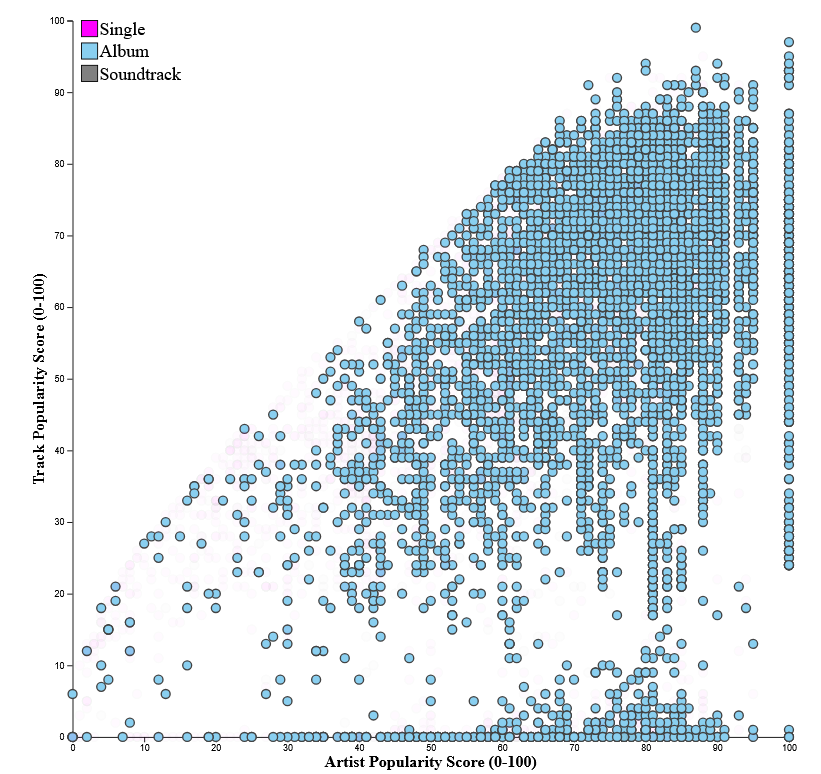

Data Visualization Project Documentation
link to the video if the embed is not working here
Introduction and Planning
I started off this project by looking for a dataset on kaggle that I found interesting. I love music so I searched Spotify and found a dataset that included information such as track name, artist name, various song attributes such as loudness, explicit, and tempo, as well as key data points such as song popularity, total listens, and country of origin. Instantly I came up with the idea to create a World Choropleth based on the example on d3’s site https://observablehq.com/@d3/world-choropleth/2
I wanted to have it map the explicit and loudness rate of songs from a given country with a color, while using some other visual element to also show song popularity. I thought this would be a good way of answering the question of how much does the tone of a song (ie. high loudness, and explicit) impact the success of a song, and does that differ by country? Sadly after doing some more research on how I would actually go about building that graphic and quickly realized that this was beyond the scope of my abilities as well as not being the best option to answer the question I wanted to answer. In addition to this after building some test graphics with the dataset I realized it had some large flaws and would need significant clearing to become usable. For example looking at the top songs I realized I had heard none of them and so I looked at the monthly stream count and noticed that many of the songs (upwards of 80% of the 82000 entries) had 1-3 extra zeros added to the end of the number. This effectively made the data unusable for my purposes so I decided to find a new dataset.
I still wanted to keep the project similar in idea so I searched for a new spotify dataset and ended up finding one I deemed perfect. https://www.kaggle.com/datasets/wardabilal/spotify-global-music-dataset-20092025 It covered 8582 recent songs from both popular and relatively obscure artists. I took the time to preemptively vet the data this time around and confirmed that it had already been cleaned and all entries made sense for their column. With this new data I had to change the question I was planning to answer as I no longer had access to any sort of location data for the tracks. I thought about simply making a graphic comparing explicitness to popularity but ultimately I decided to answer the question “How much does artist popularity affect an individual song's success?”. I felt this question would be interesting to answer, and would also allow for the incorporation of different attributes to help answer any questions I may deem relevant such as filtering the data by genre or album type.
Creating the Visualization
After browsing the d3 sites examples page for inspiration I decided on creating an interactive dot plot to show the main comparison of artist popularity and track popularity.
I planned to loosely base my design around these and planned to add interactivity with the filtering of the data. I started off by simply loading the data onto my page and getting it into the rough shape of a dot plot. This confirmed for me that a dot plot was the correct choice for my visualization as it allows the user to quickly see every single song entry and see how it compares.
This helped confirm for me that my question was worth answering as there was a positive correlation within the data so I decided to keep going from there. My immediate next steps were to adjust the visuals to help make the data more easily interpreted as well as format it better on the site.
After making some quick changes to the color of the dots, basing them on the type of album the track came from (ie. Single, album, soundtrack), as well as formatting the graphic to take up a larger portion of the screen, I felt that the graphic was coming along nicely. I chose these colors to represent my data types because even when viewed in black and white they easily contract against each other instantly allowing the user to differentiate the two. I chose the size of the site to take up around half of the screen as I wanted to both ensure it was clearly visible, as well as allowing plenty of room to add features and labels if need be.
I was feeling pretty confident with the site and after spending some more time on general polish it was looking like this
The additions I made were all to help increase how easy the data was to interpret for the user. The addition of a legend allows for one to clearly understand what each color means at a glance. The axes and associating labels are there to help the user get a better view of the trend within the data, as well as what the dots even mean. I was content with how the graphic looked visually so I moved on to adding interactability to the page to help answer more of the leading questions behind the visualization.
Designing the interaction
The first thing I knew I wanted to add was a way to inspect any given point on the chart. After referencing the d3 textbook from class I thought the section on tooltips would work perfectly for this idea. I created a simple tool tip and highlight effect for the dots that would allow the user to hover over any given data point and see exactly what song it is as well as the artist and track popularity of that point. I initially thought about showing it all in a display above the highlighted point but after some testing I realized there were some combinations of artists and song titles that ended up being extremely long. So I moved the words to the bottom of the display and made the numbers of the points bigger and kept them up top. I felt this compromise allowed for the user to still get all of the information they need from the point while also keeping the graphic clear of any clutter.
 Next I wanted a way to look at any given type of album without having to look at them within the context of the entire visualization. I decided to add an onClick effect to the legend where if you clicked on any of the different options it would toggle it on the display allowing you to hide and show each of the three types.
This allows you to get a better answer of how each type affects the overall relationship of the datapoint, as well as get a better idea of how it compares to the other due to the low opacity nodes shown in the background.
The next main feature I wanted to implement was a way to look at any given artist's songs. I felt this was something that would be something users would want out of the visualization, as well as helping to see exactly how much an artist's popularity affects their success when compared to other artists of similar popularity. I decided on both a search bar and allowing the user to click on the graphic itself to sort by the selected artist.
This works similar to the type filtering by making all unrelated nodes low opacity while keeping the selected artist’s points fully visible. I felt this effectively allowed for the user to look at any artist to see where their songs tend to end up in comparison to their own popularity.
Conclusion and Takeaways
I designed this visualization to answer the question of how artist popularity impacts popularity and it clearly answered that.
There is a clear positive relationship between the two variables. This led me to asking more questions such as how it differs by album type, and if the relationship changes for different artists. The interactive features I included allowed me to answer these new questions.

Looking at the three different graphics you can make some takeaways. Albums seem to more closely stick to the artist popularity trend whereas singles seem to have a higher chance of underperforming in comparison to the artist. This makes complete sense as singles are often where artists chose to experiment with new sounds that their fans may not necessarily enjoy. When looking at soundtracks the points seem to be spread out relatively randomly while still following the general positive trend. This is likely due to external factors such as movie success and social media trends.
When looking at how different artists compare to each other you can make some clear takeaways when comparing breakout artists to long established ones. Here we are looking at Nirvana's data on the left and a recent girl group that has blown up called Katseye on the right. When comparing the two you can clearly see that although Nirvana is a more popular artist there none of their songs other than the most popular track reach the popularity of Katseye’s least popular release. This confirms that although artists popularity does generally lead to song success there is more that goes into it that this data cannot show.
Overall I am quite happy with how my visualization came out and I feel that it does a great job at answering the question I designed it to help solve. If I were to continue to work on it into the future I would like to gather data myself from the spotify api to include things like track release, as well as monthly changes in popularity to allow me to get a deeper understanding of how these two variables affect each other.